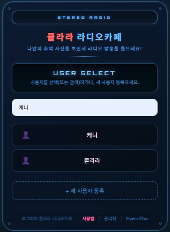
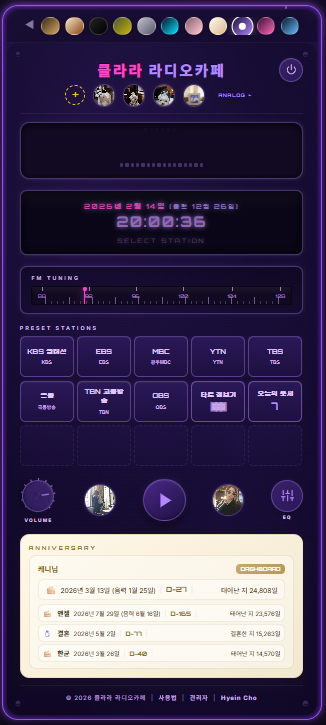
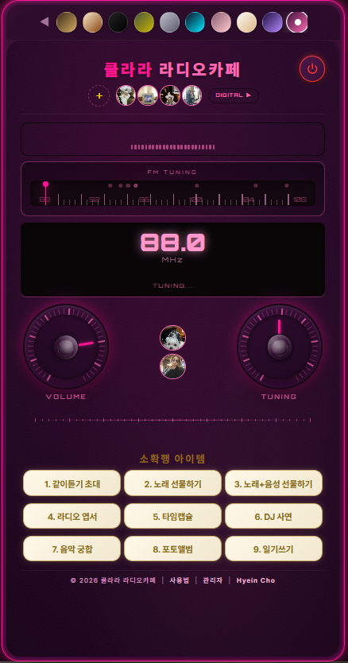
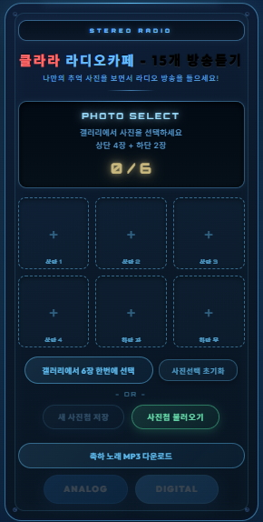

USER MANUAL
📻
사용법
클라라 라디오카페 이용 가이드
PDF
BASIC
로그인
1
사용자 선택 또는 등록
기존 사용자를 검색하여 선택하거나, "새 사용자 등록" 버튼으로 신규 등록하세요. 비밀번호는 숫자 4자리입니다.

1
2
3
4
로그인 / 랜딩 페이지
1
STEREO RADIO 헤더 + 클라라 라디오카페 로고
2
USER SELECT - 사용자 검색 및 선택
3
검색 결과 - 사용자 목록 표시
4
새 사용자 등록 / 하단 메뉴(사용법, 관리자)
라디오 듣기
1
사진 선택 + 모드 진입
로그인 후 추억 사진 6장을 선택하고, ANALOG 또는 DIGITAL 버튼으로 라디오 모드에 진입합니다.
2
방송국 선택 + 재생
아날로그: FM 튜닝 다이얼로 주파수를 맞추거나, 프리셋 버튼으로 방송국을 선택합니다. 디지털: 채널 리스트에서 방송국을 선택합니다.
3
볼륨 + 테마
볼륨 노브로 소리를 조절하고, 상단 색상 버튼으로 8가지 테마(우드, 크림, 블랙, 밀리터리, 실버, 사이버, 로즈, 몰티즈)를 선택하세요.

1
2
3
4
5
6
7
8
디지털 모드
1
테마 색상 선택 (8가지)
2
전원 버튼 (로그아웃)
3
사진 슬롯 + ANALOG/DIGITAL 모드 전환
4
LCD 디스플레이 (시간, 날짜)
5
FM 튜닝 다이얼
6
프리셋 방송국 + 소확행 아이템 바로가기
7
볼륨, 재생/정지, EQ 컨트롤
8
기념일 ANNIVERSARY + DASHBOARD

1
2
3
4
5
6
7
아날로그 모드
1
테마 색상 선택 (8가지)
2
사진 슬롯 + DIGITAL 모드 전환
3
이퀄라이저 + FM 튜닝 밴드
4
LCD 디스플레이 (주파수, MHz)
5
VOLUME 노브
6
TUNING 노브
7
소확행 아이템 9가지 버튼
사진첩 관리
1
사진 선택 + 저장
"갤러리에서 6장 한번에 선택" 또는 슬롯 개별 클릭으로 사진을 선택합니다. "사진첩 저장"으로 클라우드에 저장됩니다.
2
사진첩 불러오기
"사진첩 열기"로 저장된 사진첩을 언제든 불러올 수 있습니다. 사진 클릭 시 크게 볼 수 있습니다.

1
2
3
4
5
6
7
사진 선택 화면
1
PHOTO SELECT 안내 (상단 4장 + 하단 2장)
2
사진 슬롯 6개 미리보기
3
갤러리에서 6장 한번에 선택
4
사진선택 초기화
5
새 사진첩 저장
6
사진첩 불러오기
7
ANALOG / DIGITAL 모드 진입 버튼
9 FEATURES
01
같이듣기
02
노래 선물
03
노래+음성
04
라디오 엽서
05
타임캡슐
06
DJ 사연
07
음악 궁합
08
포토앨범
09
일기쓰기
1. 같이듣기 초대
1
초대 링크 생성
"같이듣기 초대" 버튼을 누르면 초대 링크가 생성됩니다. 링크를 복사하여 상대방에게 보내세요.
2
함께 듣기 + 채팅
상대방이 링크로 접속하면 같은 방송을 함께 들을 수 있습니다. 호스트만 튜닝/볼륨을 조절하며, 실시간 채팅으로 대화합니다.
2. 노래 선물하기
1
곡 선택 + 메시지
카테고리(생일축하, 결혼축하, 응원, 감사, 사랑)에서 축하곡을 선택하고 메시지를 작성합니다.
2
LP 플레이어로 감상
받는 사람이 링크를 열면 LP 플레이어가 나타나고, 재생 시 폭죽 애니메이션과 함께 축하곡이 재생됩니다.
3. 노래+음성 선물하기
1
곡 선택 + 음성 녹음
축하곡을 선택한 후 마이크 버튼으로 음성 메시지를 녹음합니다(최대 30초). 미리듣기로 확인 가능합니다.
2
감상
받는 사람은 LP 플레이어에서 폭죽 → 음성 메시지 → 축하곡 순서로 감상합니다. 채팅도 가능합니다.
4. 라디오 엽서 보내기
1
디자인 선택 + 메시지
4가지 빈티지 디자인(마이크, 바이닐, 레트로 라디오, 커피컵) 중 선택하고 메시지를 작성합니다(최대 200자).
2
엽서 감상
받는 사람이 링크를 열면 봉투가 열리는 애니메이션과 함께 엽서가 등장하고, 타이프라이터 효과로 메시지가 표시됩니다.
5. 추억의 타임캡슐
1
개봉 일시 + 메시지 설정
캡슐을 열 날짜와 시간(시/분/초)을 설정하고 메시지를 작성합니다. 당일부터 최대 1년 후까지 지정 가능합니다.
2
카운트다운 + 개봉
설정한 시간 전까지 잠긴 캡슐과 카운트다운이 표시됩니다. 시간이 되면 캡슐이 열리며 메시지가 공개됩니다. 채팅하기 버튼으로 대화할 수 있습니다.
6. DJ 사연 보내기
1
사연 작성 + 음성 녹음(선택)
사연을 작성하고(최대 500자), 원하면 음성 메시지도 녹음합니다. 링크를 복사하여 상대방에게 보내세요.
2
사연 감상
받는 사람이 링크를 열면 "ON AIR" 라디오 스튜디오 화면에서 타이프라이터 효과로 사연이 표시되고, 음성/TTS로 재생됩니다.
7. 음악 궁합 테스트
1
방 만들기 + 초대
"음악 궁합" 버튼을 누르면 테스트 방이 생성됩니다. 초대 링크를 상대방에게 보내세요.
2
취향 선택
상대방이 입장하면 "비 오는 날 듣고 싶은 음악은?" 같은 10개의 음악 취향 질문에 각자 답변합니다.
3
궁합 결과
두 사람의 답변을 비교하여 궁합 퍼센트를 보여줍니다. 질문별로 서로의 선택을 비교하고 채팅으로 이야기를 나눠보세요.
8. 라디오 포토앨범
1
사진 업로드
"포토앨범" 버튼을 누르고 사진을 업로드합니다(최대 10장, 각 10MB 이하). 드래그&드롭도 가능합니다.
2
공유 + 감상
링크를 복사하여 보내면, 받는 사람은 슬라이드쇼(자동/수동)와 그리드 뷰로 사진을 감상합니다.
9. 일기쓰기
1
일기 작성
오늘의 기분을 선택하고 일기를 작성합니다. 사진도 최대 3장까지 첨부할 수 있습니다.
2
일기 목록
작성한 일기는 날짜별로 정리됩니다. 이전 일기를 열어보거나 수정할 수 있습니다.
DASHBOARD
사용자 대시보드
1
기념일 관리
생일, 결혼기념일 등 소중한 기념일을 등록하면 디지털 화면에 D-day가 자동으로 표시됩니다. 수정/삭제도 대시보드에서 합니다.
2
기능 사용 현황
9가지 소확행 기능의 사용 횟수를 확인할 수 있습니다.
TIP
모든 "링크 공유" 기능은
같은 방식으로 작동합니다:
링크 복사 → 상대방에게 전달 → 클릭하여 감상
보내는 사람의 닉네임은 자동으로 채워지고,
받는 사람의 닉네임은 직접 입력합니다.
라디오를 들으며 추억의 사진과 함께
소중한 사람에게 마음을 전해 보세요.
← 이전